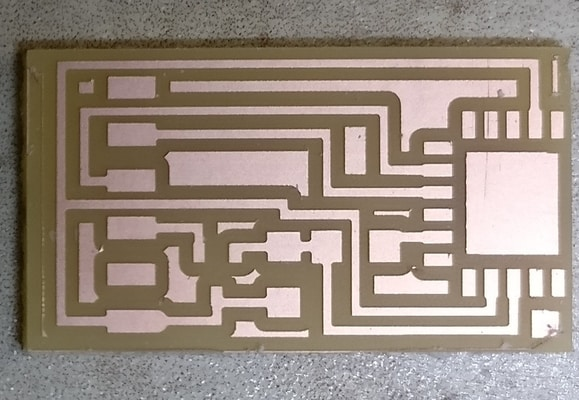
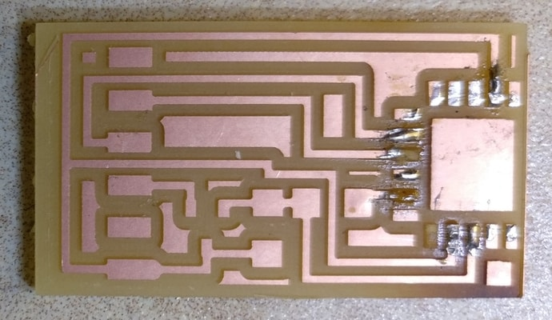
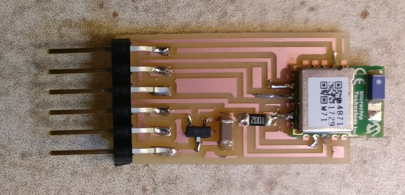
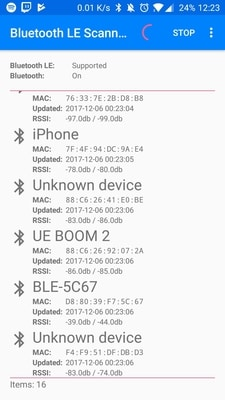
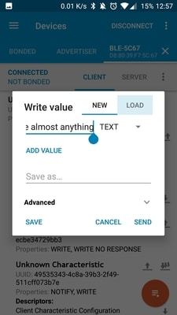
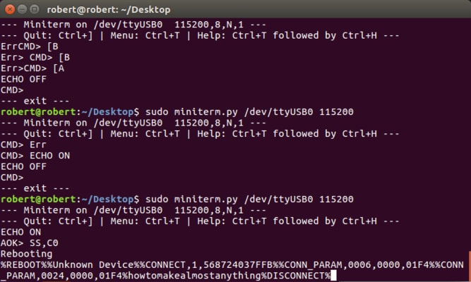

This week I learned how to connect to bluetooth sensors. I created a board with help from the guidelines here.
My main focus was to learn about networks. The board I made was simple and straightforward, basically milling and soldering the minimal board possible to equip a bluetooth sensor.
For some reason, I had milled two of them before I soldered. Turns out this was a semi-good choice. My first attempt I tried to use a heat gun to do reflow soldering. It didn't turn out so well, and I think I may have burned it. Anyways, the main issue was that some of the copper started to peel.
Good thing I had a second board ready to go. I did it the old-fashioned way. One of the copper strip under the pins was also damaged. I salvaged this and make sure everything was okay with probably uncessary but superfluous solder.
The bulk of the week was learning how to communicate with the bluetooth device. On one end was my laptop connected to the board. And then, my phone was paired to the bluetooth device. The interface was through pyserial.
Basically, I would read a lot on the commands and then try them out.
 